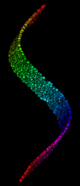

Manifold
Sculpting
This is a demo of a manifold learning algorithm.

Swiss Roll Demo - Starts with a
collection of points in 3D space on a 2D Swiss Roll manifold, and
reduces the data to two dimensions.
Semi-supervised Demo - This is
the same as the Swiss Roll Demo, but when it's done, click on the 'X'
and it will randomly pick 5% of the data to use to supervise the next
pass. Then it will do it again. Note that it's much faster the second
time because it has some supervision.
S-Curve Demo - Starts with
points in 3D space on an 2D S-Curve manifold, and reduces the data to
two dimensions.
Entwined Spirals Demo - Starts
with points in 3D space on a 1D manifold of entwined spirals, and
reduces the data to one dimension.